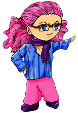

Globus Cruciger

Namea
Globus Cruciger, Caramel le caneton, correctrice officielle d’Haudryane.
- Pseudonyme : Namea
- Projets en cours : Globus Cruciger, Caramel le caneton
- Job : pondeuse de code
- Caractéristiques : correctrice des textes à rallonge d’Haudryane, créatrice de choupinet d’amour (Akoni) qui fait baver Haudryane
- Aime : ses petits et son chéri, bidouiller avec de la peinture, se moquer de la pondeuse de texte, l’héroïque fantasy, manga, animes
- Aime pas : le vocabulaire coloré de sa tendre moitié, quand on change d’avis (ce qui ne l’empêche pas de le faire elle-même), expliquer deux fois les mêmes choses
Site de Namea : http://www.samcreation.ch/Namea